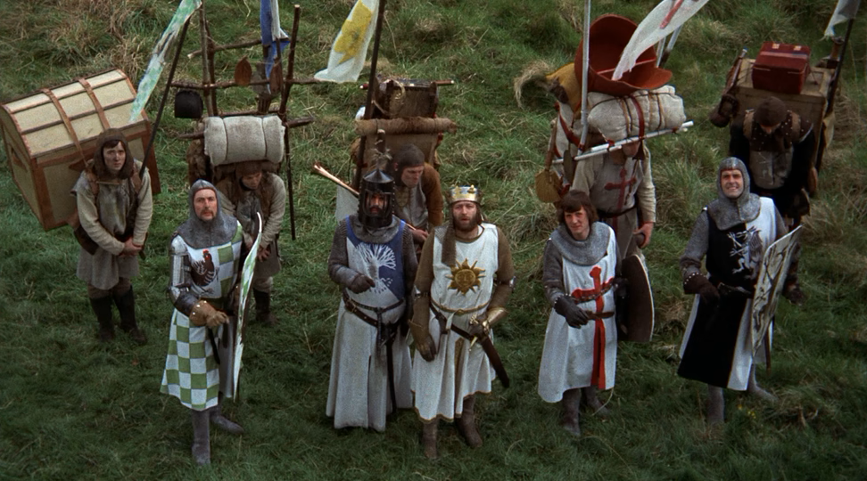

Lesson 0.1
Lesson 0.2
Lesson 0.3
Lesson 1.1
Lesson 1.2
Lesson 1.3
Lesson 1.4
Lesson 1.5
Lesson 2.1
Lesson 2.2
Lesson 2.3
Lesson 2.4
Lesson 2.5
Lesson 2.6
Lesson 2.7
Lesson 2.8
Lesson 3.1
Lesson 3.2
Lesson 3.3
Lesson 3.4
Lesson 4.1
Lesson 4.2
Lesson 4.3
Lesson 4.4
Lesson 4.5
Lesson 4.6
Lesson 4.7
Lesson 4.8
Lesson 4.9
Lesson 4.10
Lesson 5.1
Lesson 5.2
Lesson 5.3
Lesson 5.4
Lesson 5.5
Lesson 5.6
Lesson 5.7
Lesson 5.8
Midterm Review and exam Day 1
Midterm Review and exam Day 2
Midterm Review and exam Day 3
Midterm Review and exam Day 4
Midterm Review and exam Day 5
Midterm Review and exam Day 6
Midterm Review and exam Day 7
Midterm Review and exam Day 8
Midterm Review and exam Day 9
Lesson 6.1
Lesson 6.2
Lesson 6.3
Lesson 6.4
Lesson 6.5
Lesson 6.6
Lesson 6.7
Lesson 6.8
Lesson 6.9
Lesson 6.10
Lesson 6.11
Lesson 6.12
Lesson 7.1
Lesson 7.2
Lesson 7.3
Lesson 7.4
Lesson 7.5
Lesson 7.6
Lesson 7.7
Lesson 7.8
Lesson 8.1
Lesson 8.2
Lesson 8.3
Lesson 9.1
Lesson 9.2
Lesson 9.3
Lesson 9.4
Lesson 9.5
Lesson 9.6
Lesson 8.4
Lesson 8.5
Lesson 8.6
Lesson 8.7
Lesson 8.8
Lesson 8.9
Lesson 10.1
Lesson 10.2
Lesson 10.3
Lesson 10.4
Lesson 10.5
Lesson 10.6
2024-08-26
2024-08-27
2024-08-28
2024-08-29
2024-08-30
2024-09-03
2024-09-04
2024-09-05
2024-09-06
2024-09-09
2024-09-10
2024-09-11
2024-09-12
2024-09-13
2024-09-16
2024-09-17
2024-09-18
2024-09-19
2024-09-20
2024-09-23
2024-09-24
2024-09-25
2024-09-26
2024-09-27
2024-09-30
2024-10-01
2024-10-02
2024-10-07
2024-10-08
2024-10-09
2024-10-10
2024-10-11
2024-10-14
2024-10-15
2024-10-16
2024-10-17
2024-10-18
2024-10-21
2024-10-22
2024-10-23
2024-10-24
2024-10-25
2024-10-28
2024-10-29
2024-10-30
2024-10-31
2024-11-01
2024-11-06
2024-11-07
2024-11-08
2024-11-12
2024-11-13
2024-11-14
2024-11-15
2024-11-18
2024-11-19
2024-11-20
2024-11-21
2024-11-22
2024-11-25
2024-11-26
2024-12-02
2024-12-03
2024-12-04
2024-12-05
2024-12-06
2024-12-09
2024-12-10
2024-12-11
2024-12-12
2024-12-13
2024-12-16
2024-12-17
2024-12-18
2024-12-19
2024-12-20
2025-01-06
2025-01-07
2025-01-08
2025-01-09
2025-01-10
2025-01-13
2025-01-15
2025-01-16
2025-01-17
2025-01-21
2025-01-22
2025-01-23
Course Calendar
Python II Programming Honors,
